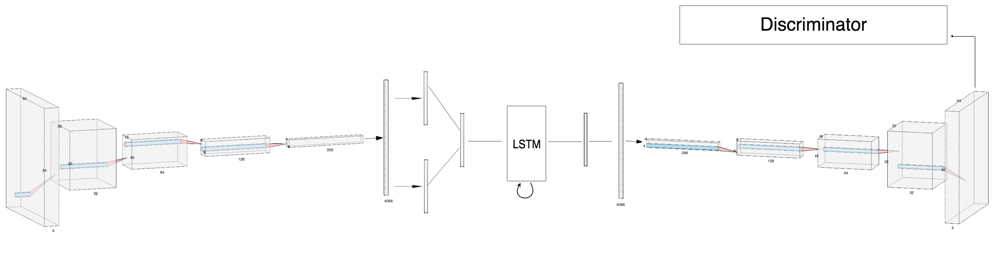
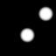
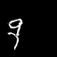
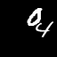
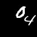
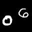

DeepGIFs: Using Deep Learning to Understand and Synthesize Motion
Humans are adept at intuiting how objects can and should move. We form this understanding before we form
our understanding of the physical mechanisms underpinning motion. Understanding `rules of motion' is central to the task
of generating realistic sequences. Frames should plausibly follow from previous frames, and objects should move, deform,
and interact realistically. Structuring a video generation task around consistent motion is a challenging task for which
deep learning is a well-suited solution and for our CS 231N final project at Stanford,
we did exactly that.
Abstract
Recurrent neural networks (RNNs) have seen widespread use across a variety of generative tasks requiring temporality. In this paper we explore the effectiveness of deep recurrent networks in the task of understanding
motion. In particular, we propose a modular architecture for inferring realistic motion from still `seed images', based on
the recent success of generative adversarial networks. We evaluate this architecture on a variety of synthetic datasets and
show that our network is able to successfully learn motion and generate new videos from still images.
Architecture

Our model consists of a convolutional encoder and decoder network, an LSTM, and a discriminator network. Our architecture
uses four conv-relu-pool layers to encode the seed frame into a latent representation on which the LSTM predicts future frames.
The decoder network converts these predictions back into images and has the inverse architecture of the encoder. The discriminator
has the same architecture as the encoder with a sigmoid function applied to the final scalar output. It is used to discriminate between
the generated frames and the original data. This allows our network to generate clearer outputs.
Results: Bouncing Ball
Each pair of images consists of an actual GIF in our dataset on the left and a generated GIF
on the right, produced by taking the first frame of the actual GIF and inputting it to our model.





Results: Moving MNIST
Each pair of images consists of an actual GIF in our dataset on the left and a generated GIF on the right, produced by taking
the first frame of the actual GIF and inputting it to our model.







